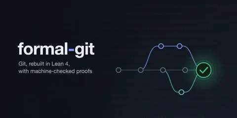

Natalie Marleny announces formal-git, modelling about 30% of Git in Lean 4
Built over two months with heavy use of coding agents, the project proved more than 8,000 theorems of varying usefulness and uncovered more than 100 potential defects in Git v2.55, including at least two possible security vulnerabilities. Its differential random testing harness and more than 10,000 unique tests will be open-sourced after responsible disclosure.

Checked against: @NatalieMarleny on X